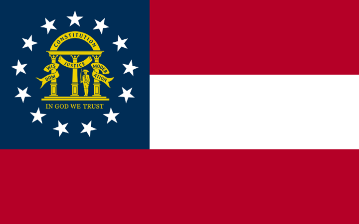

Discovering Georgia
Georgia is a state in the southeastern United States, bordered by Florida, Alabama, Tennessee, North Carolina, and South Carolina. It is the 24th largest state by area and the 8th most populous state. It has 159 counties and its capital is Atlanta. It is known as the “Peach State” for its peach production and the “Empire State of the South” for its economic and cultural influence. It is also famous for its history, music, and natural beauty.
Georgia has a long and rich history, dating back to the Native American tribes that inhabited the region, such as the Creek, the Cherokee, the Seminole, and others. It was explored and colonized by the Spanish, the French, and the English, who established trading posts and settlements along the coast and the rivers. It was the fourth state to ratify the U.S. Constitution on January 2, 1788. It was the site of many important events and battles during the American Revolution, such as the Siege of Savannah, the Battle of Kettle Creek, and the Battle of Augusta. It was also the site of the Yazoo land fraud, one of the largest land scandals in U.S. history, in which four companies bribed the state legislature to sell them 35 million acres of land at a fraction of its value.
Georgia was a slave state that supported the Confederate States of America (Confederacy) during the American Civil War. It seceded from the Union on January 19, 1861 and joined the Confederacy on February 4, 1861. It contributed more than 100,000 soldiers to the Confederate cause, as well as many resources and supplies. It was the site of many major battles and campaigns, such as the Atlanta Campaign, the Battle of Chickamauga, the Battle of Peachtree Creek, the Battle of Atlanta, the Battle of Jonesboro, and the March to the Sea. It was the last state to be restored to the Union on July 15, 1870, after a period of Reconstruction.
Georgia has a diverse and dynamic economy, based on agriculture, manufacturing, service, and technology. It is one of the leading producers of cotton, peanuts, pecans, peaches, poultry, and eggs in the country. It also has a strong industrial sector, with major industries such as aerospace, automotive, textiles, paper, and chemicals. It is home to some of the largest and most successful corporations in the world, such as Coca-Cola, Delta Air Lines, Home Depot, UPS, and CNN. It is also a major hub for education, research, and innovation, with many prestigious universities and institutions, such as the Georgia Institute of Technology, Emory University, the University of Georgia, and the Centers for Disease Control and Prevention.
Georgia has a vibrant and diverse culture, influenced by its Native American, European, African, and Asian heritage. It has a variety of festivals, events, and traditions, such as the Georgia State Fair, the Georgia Peach Festival, the Georgia National Rodeo, and the Georgia Renaissance Festival.